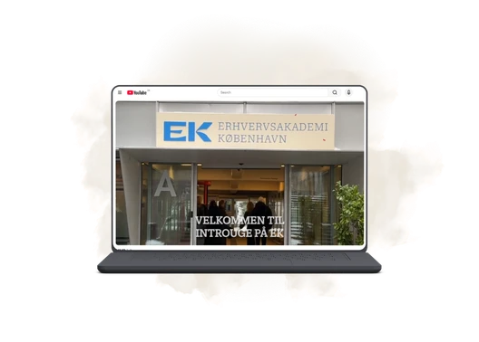
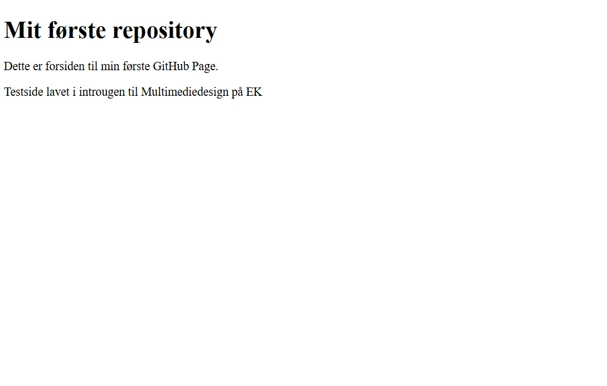
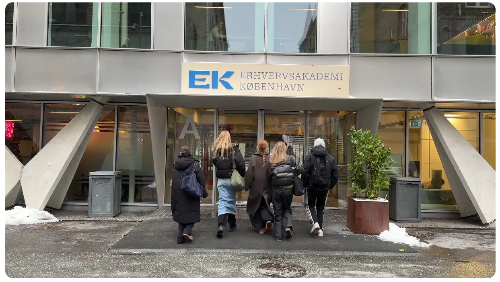

Tema 1
Introuge
I tema 1 blev jeg introduceret til multimediedesignuddannelsen, studiets arbejdsformer og de digitale værktøjer, vi skulle bruge gennem semesteret. Ugen gav en rolig opstart og dannede et solidt grundlag for resten af semestret. Der var plads til at lande på uddannelsen, lære hinanden at kende og få en første forståelse af multimediedesigneres faglighed.

Første møde med multimediedesign
Temaet fungerede som en introduktion til både uddannelsen, arbejdsformerne og nogle af de centrale værktøjer, vi senere skulle bruge aktivt. Vi arbejdede med individuelle opgaver, gruppeøvelser og de første praktiske trin i digital produktion.
Jeg oprettede mit første GitHub-repository, blev introduceret til domæne og publicering, lavede et visuelt præsentationskort i FigJam og deltog i en gruppeopgave, hvor vi filmede og redigerede en video.
Proces
Herunder kan processen foldes ud i mindre dele. Den viser, hvordan temaet gav mig en faglig, teknisk og social introduktion til semesteret.
Introduktion til uddannelsen
Introugen gav mig mulighed for at lande på uddannelsen, møde undervisere og medstuderende og få et overblik over, hvad multimediedesignuddannelsen indeholder.
Det var en god måde at starte på, fordi vi ikke blev kastet direkte ud i et stort projekt, men i stedet fik tid til at forstå studiets rammer, arbejdsformer og faglige retning.
GitHub, domæne og publicering
Jeg oprettede mit første GitHub-repository og blev introduceret til domæne og publicering. Det gav mig en grundlæggende forståelse for, hvordan GitHub kan bruges til versionsstyring, struktur og deling af digitale projekter.
Selvom GitHub var svært at forstå i begyndelsen, blev det et værktøj, jeg senere kom til at bruge aktivt gennem hele semesteret. Nedenfor ses et screenshot af den første hjemmeside på mit første GitHub repo.

Præsentationskort i FigJam
I temaet lavede vi et præsentationskort i FigJam, hvor vi skulle skabe en visuel præsentation af en medstuderende. Opgaven gav mig en praktisk introduktion til FigJam og gjorde mig mere tryg ved at arbejde med visuelle digitale værktøjer.
Da præsentationskortet indeholder billede og oplysninger om en anden person, vælger jeg ikke at vise det direkte på mit portfolio.
Ugeopgave og gruppearbejde
I ugeopgaven arbejdede vi i grupper med at filme og redigere en video. Min rolle var at idéudvikle sammen med gruppen, filme og selv deltage foran kameraet.
Opgaven gav en tidlig erfaring med kreativt samarbejde og viste, hvordan forskellige mennesker bidrager med forskellige styrker i en fælles produktion.
Nedenfor er et billede fra videoen. Selve videoen kan ses her.

Refleksion
Tema 1 dannede et vigtigt fundament for resten af semesteret. Det gav mig indblik i multimediedesign som både et kreativt, teknisk og samarbejdsorienteret fagområde. Jeg lærte både om konkrete værktøjer som FigJam og GitHub, men også om at forstå, hvordan man arbejder som multimediedesigner.
Særligt GitHub var nyt for mig. I starten var det svært at forstå, og dele af det føltes som en “black box”. Men gennem temaet lærte jeg at oprette repositories og fik en begyndende forståelse for, hvordan GitHub fungerer som værktøj til struktur, versionering og publicering.